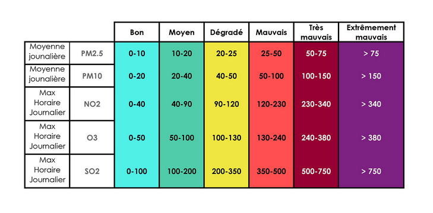

Introduction
Ce projet a été réalisé dans le cadre de l'enseignement du Challenge Open Data
codirigé par Renaud BLANCH et Sylvain BOUVERET. Notre équipe de cinq étudiants est
constituée d'Arthur SARRY, Aurélien VILMINOT, Damien CLAUZON, Laure CERUTTI et
Maxime NEMO.
Vivant dans l'agglomération grenobloise, souvent décrite comme trop polluée, nous
avons choisi pour ce projet de représenter la pollution atmosphérique de différentes
villes françaises. Cette démarche s'inscrit dans une problématique de développement
durable et sociétal.
Jeux de données
L'ensemble des jeux de données utilisés sont sous la licence open. Nous avons
récupéré ceux-ci auprès d'institutions gouvernementales et allons utiliser les
données suivantes pour construire notre application :
-
Concentrations des polluants -
Lien
La surveillance de la qualité de l'air est gérée par les associations
agréées de la surveillance de la qualité de l'air (AASQA) effectuant des
relevés réguliers des différents composants dans l'air. Les données
disponibles par ces processus sont des données horaires issues d'analyseurs
automatiques. Les concentrations des polluants atmosphériques suivants sont
mesurées :
- Ozone (O3)
- Monoxyde d'azote (NO)
- Dioxyde d'azote (NO2)
- Dioxyde de soufre (SO2)
- Particules de diamètre inférieur à 10 µm (PM10)
- Particules de diamètre inférieur à 2,5 µm (PM2.5)
- Monoxyde de carbone (CO)
Pour certaines stations, il est possible que certains polluants ne soient
pas mesurés. Comme indiqué précédemment, les données sont actualisées en
temps réel toutes les heures. Néanmoins, pour les besoins de ce projet, nous
avons fait le choix de ne télécharger qu'une partie de ces données, à savoir
sur le mois de janvier 2022. Sur cette même base de données, nous avons
également récupéré un fichier permettant de faire le lien entre une station
et ses coordonnées GPS afin de pouvoir la positionner sur la carte.
-
Aéroports français -
Lien
Ce jeu de données nous permet de connaître les coordonnées géographiques des
aéroports français recevant un trafic commercial significatif, c'est-à-dire
supérieur à 2000 passagers. Il permet également de connaître la région et la
ville desservies pour chacun des aéroports.
-
Découpage administratif -
Lien
Ce jeu de données est exploitable sous la forme d'API. Il permet de faire le
lien entre des coordonnées GPS et le nom de la ville, du département ainsi
que de la région concernée. Ainsi, pour chaque station de mesure, nous avons
utilisé un script Python récupérant les données associées via cette API.
Cela nous permet de pouvoir faire un menu déroulant pour sélectionner la
station souhaiter ainsi que de faire une recherche par ville et/ou par
département.
Traitements effectués
Ces étapes sont toutes réalisées en Python.
-
Nettoyage des données
Nous opérons en premier lieu un prétraitement des données. En effet, les
fichiers fournis sont assez volumineux (10 Mo) et dépassent individuellement
la limite imposée pour le projet. Ils présentent également des informations
redondantes et une granularité dont nous n'avons pas l'utilité. Par exemple,
une prise de mesure est effectuée chaque heure pour chaque station et pour
chacun des polluants qu'elle est capable de capter. N'ayant besoin que d'une
mesure par jour, nous en tirons une moyenne, une médiane, un écart-type
ainsi qu'une valeur minimale et maximale. Nous gardons avec cela
l'identifiant de la station, son nom et les unités utilisées. Ces opérations
nous permettent de réduire la taille des fichiers à 135 Ko environ.
Nous établissons également une liste des stations rencontrées avec leur
identifiant et leurs coordonnées que nous utilisons lors de l'étape
suivante.
-
Mise en relation avec d'autres jeux de données et association d'un ou
plusieurs aéroports aux stations.
Certaines informations intéressantes ne sont pas présentes dans le premier
jeu de données telles que les coordonnées GPS des stations ainsi que la
ville et le département dans lesquels elles se trouvent. Grâce à
l'identifiant de la station, nous retrouvons, via un autre fichier de la
même base de données, les coordonnées de chaque station. Cela nous permet
par la suite de mettre celles-ci en relation avec l'API de découpage
administratif afin d'obtenir une ville et un département correspondant.
Nous avons également pensé qu'il serait intéressant de mettre en relation
les stations avec des aéroports dont elles seraient proches puisque ceux-ci
sont sources de forte pollution locale. Nous avons pour cela utilisé une
autre base de données et avons donc lié chaque station à tous les aéroports
situés à moins de 18 km (valeur étant tirée de nos recherches).
-
Calcul de la note
Afin de mesurer l'évolution de la qualité de l'air des différentes villes,
il était nécessaire d'utiliser un indicateur. Nous avons choisi d'utiliser
l'indicateur "ATMO" qui est un indicateur journalier mis en place et utilisé
par les associations agréées de la surveillance de la qualité de l'air. Il
permet de mesurer la qualité de l'air à l'échelle d'une ville et sur
l'ensemble du territoire français : en métropole et en outre-mer. De plus,
il fournit des résultats facilement interprétables visuellement pour les
utilisateurs puisqu'une note allant de 1 à 6, illustrée à l'aide d'émojis de
couleur, peut être calculée chaque jour.
Afin de calculer cette note, l'indicateur prend en compte la concentration
de cinq principaux polluants atmosphériques que sont l'ozone (O3), le
dioxyde d'azote (NO2), le dioxyde de soufre (SO2) ainsi que les particules
de diamètre inférieur à 10 µm (PM10) et à 2,5 µm (PM2.5). Plus précisément,
les maximums horaires d'ozone, dioxyde d'azote et de soufre sont pris en
compte tandis que c'est la moyenne journalière qui est prise en compte pour
les particules fines.
Pour chaque polluant, une note allant de "bon" à
"extrêmement mauvais" est attribuée puis la note finale est définie comme
étant la plus mauvaise note des cinq polluants. Le choix de prendre la note
maximale comme finale et non une moyenne des notes peut être justifié par
certaines études qui ont montré que ce sont les très fortes concentrations
de polluants qui sont les plus dangereuses pour la santé dans la plupart des
situations.
Le tableau utilisé pour le calcul de cette note est décrit ci-dessous.

De plus, nous avons choisi d'ajouter le monoxyde d'azote (NO) dans nos
calculs de note, car nous trouvions intéressant de coupler différentes
méthodes de calcul de pollution afin d'obtenir des résultats plus précis.
L'indice ATMO a cependant certaines limites puisqu'il ne prend pas en compte
les polluants individuellement et ne tient pas compte des effets dits «
cocktails » et l'ensemble des polluants non réglementés, mais présents dans
l'air ambiant comme les particules ultra-fines, les pesticides, les pollens…
Il s'agit d'une représentation quotidienne simplifiée de la qualité de l'air
en situation « de fond », c'est-à-dire éloigné des sources spécifiques de
pollution comme les axes de trafic, raison pour laquelle nous avons choisi
de représenter des sources de pollutions environnantes comme les aéroports.
Architecture et technologies
Le style de la page web a été réalisé avec Bootstrap.
La carte interactive est faite à l'aide de Leaflet. Elle utilise les données
cartographiques sous licence libre provenant de OpenStreetMap. Au vu du grand
nombre de stations à afficher, nous avons choisi de regrouper les stations proches,
grâce au plugin MarkerCluster, pour faciliter la visualisation des stations
et avoir une meilleure vue d'ensemble depuis une vue éloignée de la France.
La librairie
heatmap.js nous a
permis d'ajouter une couche interactive permettant de visualiser le niveau de
pollution du territoire selon la note journalière calculée précédemment. Elle permet
de faire l'interpolation des notes de points relativement proches afin d'obtenir un
rendu lissé sur l'ensemble des zones observées.
Les graphiques en lignes et en barre ont été réalisés à l'aide de Chart.js.
Nous avons choisi cette bibliothèque, car elle est très simple d'utilisation et
parce qu'elle permet de réaliser la plupart des graphiques envisageables. Afin de ne
pas rendre la page trop lourde au chargement, l'objet contenant la charte n'est pas
détruit lors d'un changement de données, mais est juste actualisé. Cela permet une
meilleure fluidité et ainsi une meilleure expérience utilisateur.
Les couleurs ont été choisies dans la mesure du possible de façon à être "agréables"
pour tous, notamment pour les personnes ayant des troubles de perception des
couleurs. Nous avons alors joué sur le choix des palettes de couleurs pour que le
site soit encore utilisable en image en nuances de gris pour des besoins
d'accessibilité visuelle.
Comme indiqué précédemment, avons choisi d'utiliser la notation de l'indice ATMO
avec des émojis de couleur. Cependant, cet indice ne permet pas d'illustrer l'impact
de chaque composant, et nous souhaitions montrer la "responsabilité" de chaque
polluant dans la note attribuée à une ville. Nous avons donc choisi de représenter
ceci à l'aide d'un PieChart. De nombreux articles font état de la difficulté
visuelle à analyser les proportions d'un PieChart pour les utilisateurs néanmoins
les valeurs représentées n'ont nul besoin d'être lues précisément pour être
comprises. Ce qui nous intéresse à travers ce graphique est de donner à
l'utilisateur un ordre de grandeur des concentrations des différents polluants,
comme pour permettre de comparer chaque polluant sans avoir à tenir compte des
unités respectives.
Conclusion
Nous avons analysé notre page web à l'aide du calculateur d'impact GreenIT Analysis.
À l'issue de cette analyse, nous avons obtenu la note C. Lorsque nous avons
analysé le détail des bonnes pratiques non respectées, nous avons remarqué que
certaines n'étaient pas de notre ressort, mais dépendaient, par exemple, de la carte
Leaflet.
Pour aller plus loin dans ce projet, il faudrait avoir accès aux données en temps
réel, via une API. Cela permettrait d'avoir des données actualisées, mais aussi
accès à une échelle de temps potentiellement bien plus grande. Un second point sur
lequel nous pourrions travailler est l'interaction homme-machine. En effet, afin de
l'améliorer, il serait possible de proposer une première version à de nombreux
utilisateurs et leur demander d'expliquer ce qu'ils ont apprécié, et ce qui ne leur
a pas plu. Nous pourrions alors proposer une seconde version actualisée répondant
mieux aux besoins réels de ces personnes.